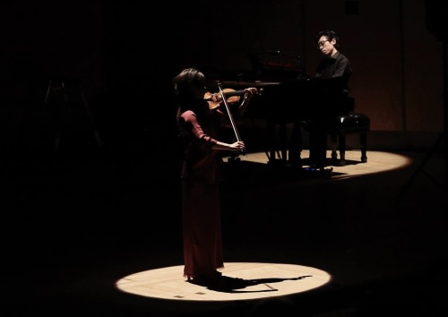

状態 No. 2 (2022)
for one or any number of performers
Play any ready-made piece(s) of music at the same time with a/any noise.
任意の既成楽曲を騒音とともに演奏する
performed by Hyun-Mook Lim, 2024
This is a textual score work in which an arbitrary pre-existing piece of music is performed with noise. This is an exploration of audibility and creation in the material world. In this project, an autonomous piece of music will be performed in a way that cannot be heard clearly, and its perception, cognition, and phenomena will be observed.
Akiko Yamane
任意の既成楽曲を騒音とともに演奏するというテキスト楽譜作品。自律した楽曲をよく聞き取れない状態で上演し、その現象や知覚、体感を観察する。
山根明季子
commissioned by Yuri Umemoto, Chiharu Taki and Shota Nakano
premiered by Chiharu Taki, Shota Nakano, Ko Sahara
2nd July. 2022, Kanagawa Prefectural Music Hall